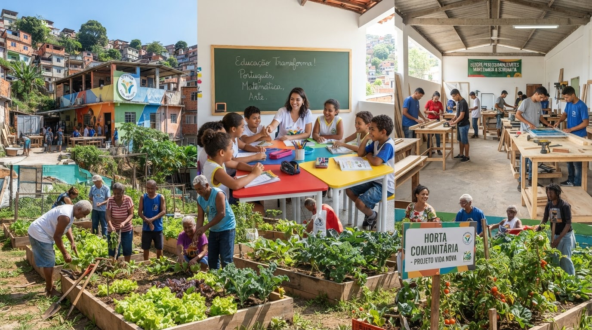

Nossas Frentes de Atuação
Projeto Alimentação

Distribuição de cestas básicas e refeições para famílias em situação de insegurança alimentar.
AlimentaçãoProjeto Educação
Aulas de reforço escolar e oficinas de capacitação profissional para jovens e adultos.
EducaçãoProjeto Capacitação
Cursos profissionalizantes de marcenaria, serigrafia e panificação para geração de renda.
CapacitaçãoComo Participar
ℹ️ Novas vagas de voluntariado abertas!
Como ser Voluntário: Participe das nossas ações presenciais ou remotas. Cadastre-se e escolha a frente de atuação que combina com você.
Como Doar: Contribua com doações financeiras ou de itens. Cada doação transforma vidas e fortalece nossas comunidades.